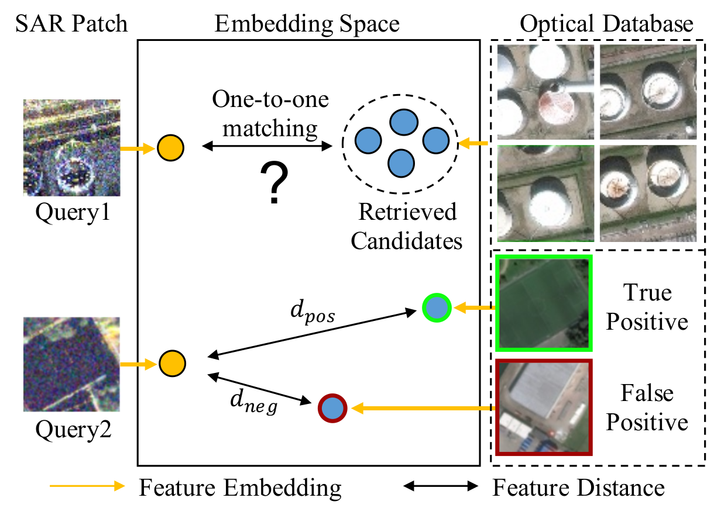
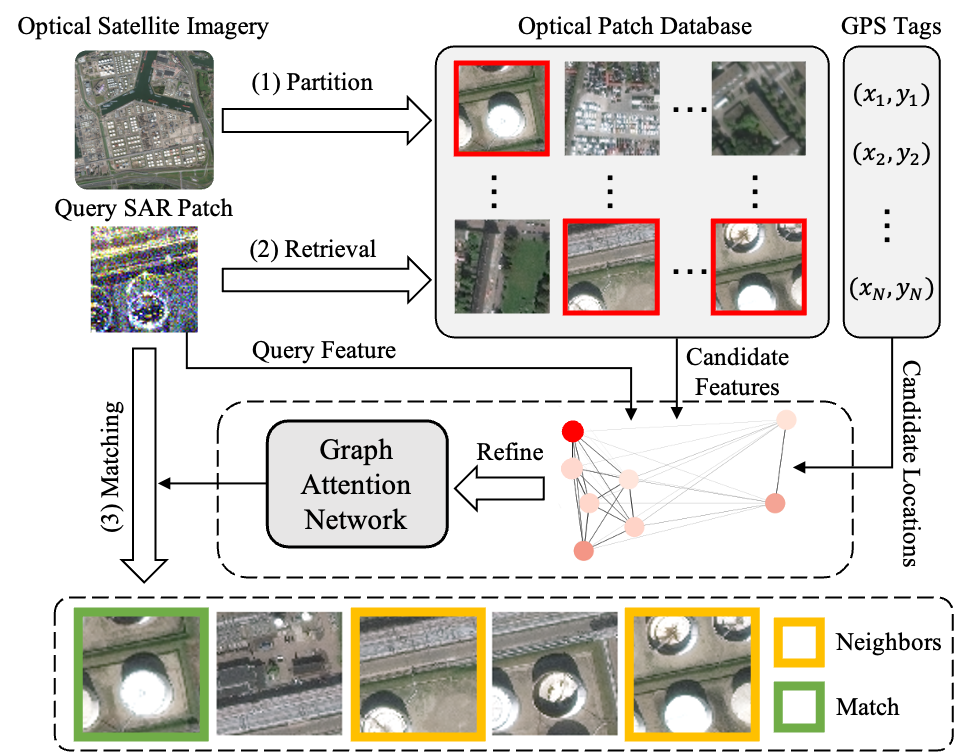
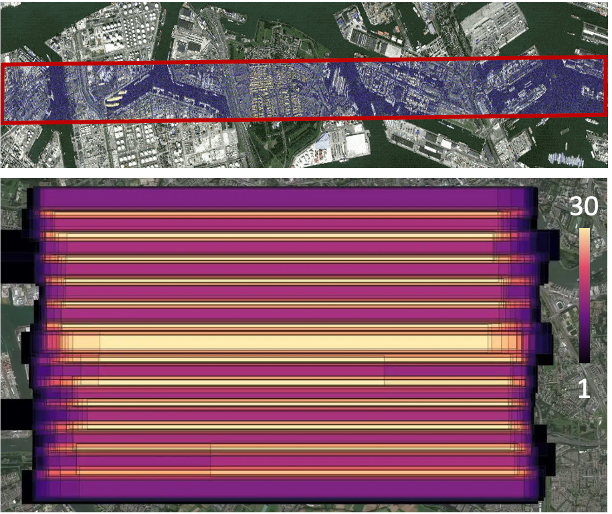
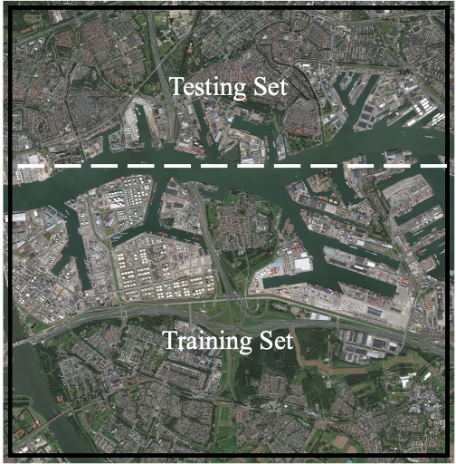
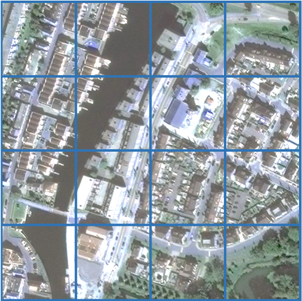
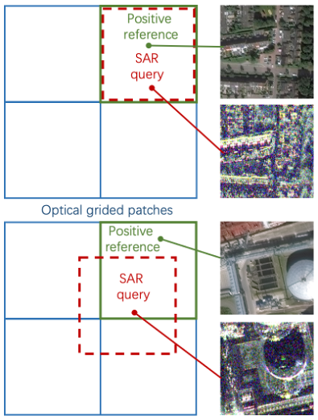
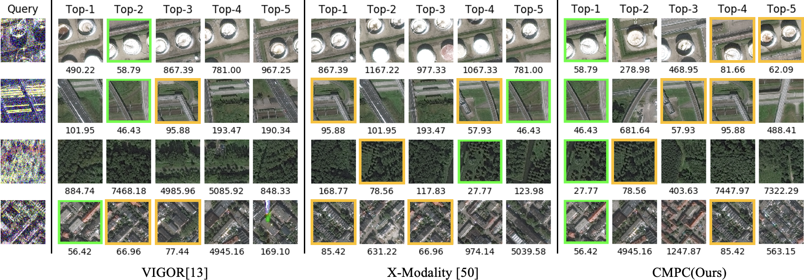

Learning to Find the Optimal Correspondence between SAR and Optical Image Patches
Haoyuan Li,
Fang Xu,
Wen Yang,
Yuming Xiang,
Huai Yu,
Haijian Zhang,,
Gui-Song Xia,
EIS SPL, Wuhan University, Wuhan, China
Aerospace Information Research Institute, Chinese Academy of Sciences, Beijing, China
LIESMARS, Wuhan University, Wuhan, China
[Paper]
[Code]
[Data]
Abstract
This study addresses the problem of finding the optimal correspondence for a given synthetic aperture radar (SAR) image patch from a large collection of optical reference patches, which is crucial for various applications, including remote sensing, place recognition, and aircraft navigation. However, achieving one-to-one SAR-Optical Patch Correspondence is challenging due to the distinct modal discrepancy and the poor discriminability of the target instances. To address these challenges, we propose a Cross-Modal Patch Correspondence (CMPC) scheme that consists of two modules: a retrieval-based coarse search module and a correspondence refinement module. Specifically, to explicitly represent the modal discrepancy, we first introduce a cross-modal adversarial learning strategy in the coarse search module and learn the modal-invariant feature embedding for retrieval. Furthermore, to improve the instance discriminability of retrieved candidates, we propose a graph representation in the refinement module to integrate the visual and spatial information, which is finally fed to an attention graph network to estimate the optimal correspondence.To evaluate the effectiveness of the proposed scheme, we also propose three new SAR-Optical patch correspondence datasets. Comprehensive experiments show that our approach significantly outperforms the competitors on all three datasets.
Introduction
Visual localization is an important application of remote sensing, place recognition, and aircraft navigation, which is achieved by estimating the correspondence of the query and reference database images. This task is typically addressed as an image retrieval problem based on visual similarity. While existing image-based retrieval methods have shown promising performance in scenarios where images are captured using optical cameras, they heavily rely on the assumption that optical images can always reliably capture the necessary information. However, this assumption may not hold true in challenging conditions such as low-light environments or adverse weather conditions. Hence, it becomes imperative to explore alternative and more robust information sources that can facilitate stable image correspondence even in such challenging scenarios.Concretely, two challenges of this task are listed below:
Poor instance discriminability. The patch correspondence requires the optimal matching between the query and only one target. However, similar visual features lack instance discriminability, posing the challenge of identifying the best correspondence from the retrieved candidates, as shown in query1 of Fig.1. This limitation can lead to inaccurate and unreliable results in scenarios where the retrieved candidates have a high degree of similarity.
Distinct feature distribution. The fundamental differences in the imaging principles of SAR and optical modalities lead to variations in the appearance and structure of the same object in the two modalities, which makes it difficult to find a common representation for cross-modal features. As shown in query2 of Fig.1, the negative sample is more similar than the true positive in embedding space due to the distinct feature distributions.
It poses a challenge for learning-based methods that rely on the feature distribution metric.
Overcoming this challenge requires the development of techniques that can efficiently model and bridge the feature distribution gap between these SAR and optical images.

Fig.1. The challenges of cross-modal patch correspondence task.

Fig.2. Workflow of cross-modal remote sensing patch correspondence.
|
|
We propose a Coarse-to-Fine correspondence scheme (Fig.2) to explore the feasibility of instance-level cross-modal patch correspondence. The proposed scheme comprises a cross-modal coarse search module and a refinement module. The coarse search module adopts adversarial learning to narrow the modal gap and extract modal-invariant features to retrieve the candidates. The refinement module turns the embedding features and the candidates' GPS information into a graph representation, and then selects the optimal correspondence by updating the graph via an attention message propagation. To evaluate the performance of our proposed scheme, we also construct three SAR-Optical patch correspondence datasets.
Our contributions are four-folds:
- We introduce a Coarse-to-Fine scheme for SAR-Optical remote sensing cross-modal patch correspondence (CMPC) to find the optimal correspondence between SAR and optical images.
- We explicitly model the cross-modal feature distribution as Wasserstein distance and propose a cross-modal adversarial learning strategy to learn the modal-invariant feature.
- We propose a graph representation that incorporates the visual feature and spatial information to improve the discriminability of the retrieved candidates and refine the coarse retrieval to optimal correspondence.
-
We construct three datasets to evaluate various methods' feasibility of on the cross-modal patch correspondence task and even the localization applications. Our proposed scheme achieves state-of-the-art results on these proposed datasets.
|
Dataset
|
Optical-SAR Patch Correspondence Datasets
|
|




(a) The top shows a SAR strip sample
over city.
(b) The cross-area region setting.
(c) The gridded optical patches.
(d) Aligned vs. Non-aligned SAR-ptical patch pairs.
The sampling strategy of the proposed datasets. (a) shows the SAR and optical image data. (b) shows the non-overlap region protocol for the training set and the test set. (c) shows the cropping strategy of optical patches. (d) shows the patch correspondence definitions.
|
Experimental Results
|
A Comparison of Different Methods on CMPC Dataset
|

The visualization of the retrieval result on the Same-area Dataset. The patches with green boxes are real matches, while the yellow boxes are neighbors
with region overlaps. The numbers under patches are the location distance between the query and the retrieved optical patches.
|
Acknowledgements
We would like to thank the anonymous reviewers for their valuable comments and contributions. The numerical calculations in this article have been done on the supercomputing system in the Supercomputing Center, Wuhan University.
|